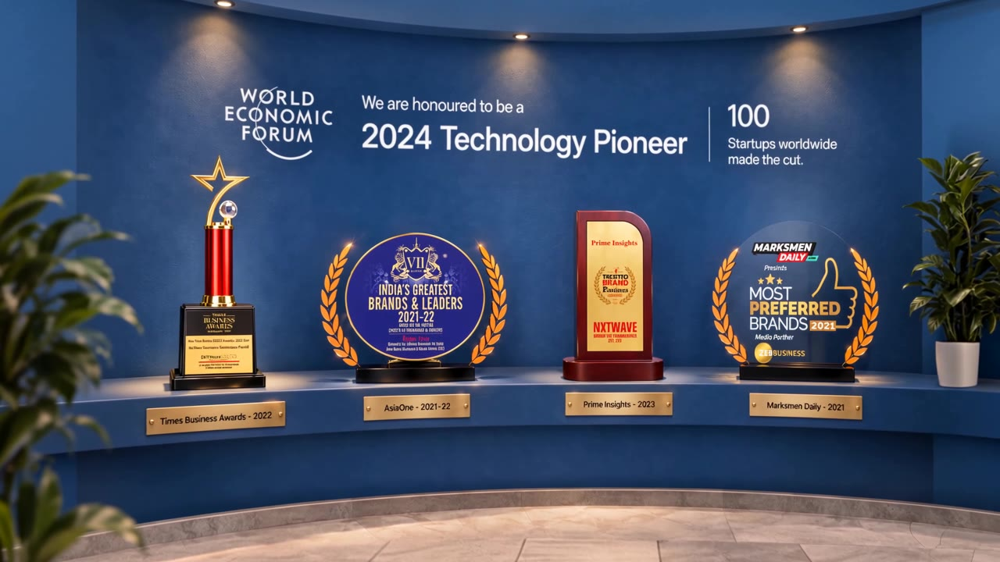
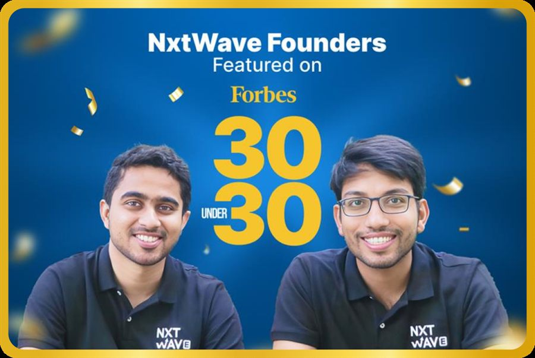
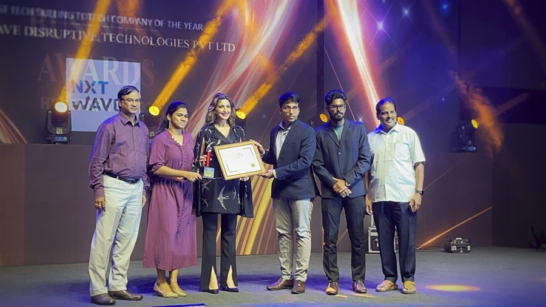
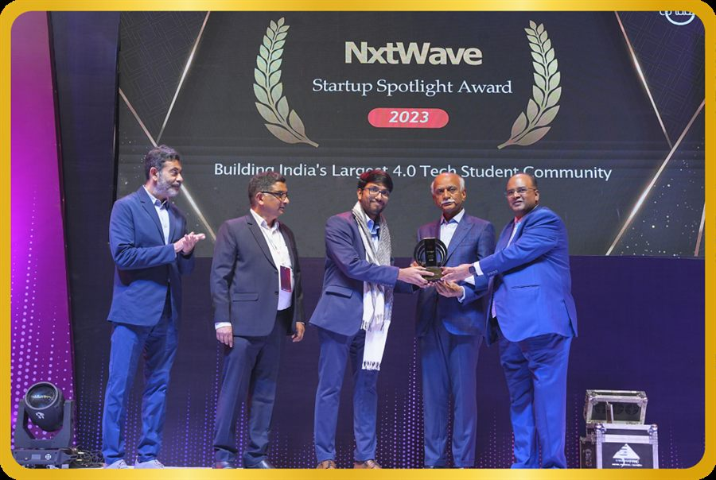
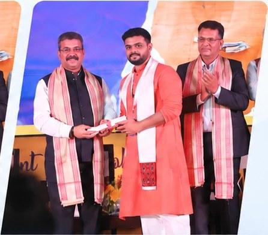

AI is built into how
you solve problems
You use the tools working engineers use, on everything you build here.
The same AI tools used by modern engineering teams.


Founders Mr. Anupam Pedarla & Mr. Sashank Gujjula made it to the prestigious 2024 Forbes India 30 Under 30 list!

Mr. Sashank Gujjula, Co-founder, NxtWave, receiving the ‘Best Tech Skilling EdTech Company’ award by Times Business Awards

Mr. Sashank Gujjula, Co-founder, NxtWave, receiving the ‘Best Tech Skilling EdTech Company’ award by Times Business Awards
Our learners continue to make us proud, receiving recognition at the national level for their talent and contribution.
Request a Callback
Across product companies, startups, and global services firms.
and many more…
Real people. Named companies. Their own words.
View All3,000+ companies have hired from our programmes. This is what we teach that gets people through.
You use the tools working engineers use, on everything you build here.
The same AI tools used by modern engineering teams.
DSA, systems, problem solving. AI raised the bar on these. It did not remove them.
What companies screen for keeps moving. So does what you learn.
Not generic soft skills training.
The people who actually make the hiring decision, on why they keep coming back.
Supported by investors who share our vision for the future of tech education.